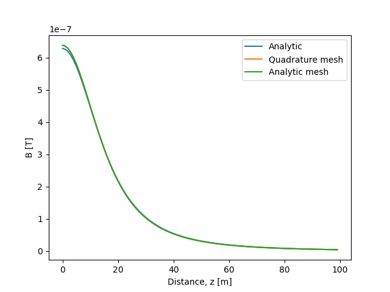
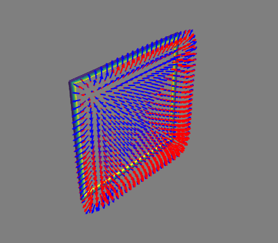
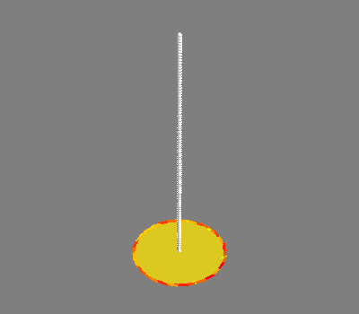

Note
Click here to download the full example code
Analytic B-field computation¶
Validation of analytic mesh operator for magnetic field computation.
- 
- 
Out:
Computing magnetic field coupling matrix, 676 vertices by 676 target points... took 0.17 seconds.
Computing magnetic field coupling matrix analytically, 676 vertices by 676 target points... took 0.64 seconds.
Relative RMS error 0.00522928695809423
Computing magnetic field coupling matrix, 4701 vertices by 100 target points... took 0.28 seconds.
Computing magnetic field coupling matrix analytically, 4701 vertices by 100 target points... took 0.70 seconds.
import numpy as np
import trimesh
from mayavi import mlab
import matplotlib.pyplot as plt
from bfieldtools.mesh_calculus import gradient
from bfieldtools.mesh_magnetics import magnetic_field_coupling, magnetic_field_coupling_analytic
from bfieldtools.mesh_class import MeshWrapper
import pkg_resources
#Load simple plane mesh that is centered on the origin
file_obj = pkg_resources.resource_filename('bfieldtools',
'example_meshes/10x10_plane.obj')
coilmesh = trimesh.load(file_obj, process=False)
coil = MeshWrapper(mesh_obj = coilmesh)
weights = np.zeros(coilmesh.vertices.shape[0])
weights[coil.inner_verts] = 1
test_points = coilmesh.vertices + np.array([0,1,0])
B0 = magnetic_field_coupling(coilmesh, test_points) @ weights
B1 = magnetic_field_coupling_analytic(coilmesh, test_points) @ weights
s = mlab.triangular_mesh(*coilmesh.vertices.T, coilmesh.faces,
scalars=weights, colormap='viridis')
s.enable_contours = True
s.actor.property.render_lines_as_tubes = True
s.actor.property.line_width = 3.0
mlab.quiver3d(*test_points.T, *B0.T, color=(1,0,0))
mlab.quiver3d(*test_points.T, *B1.T, color=(0,0,1))
print('Relative RMS error', np.sqrt(np.mean((B1-B0)**2))/np.sqrt(np.mean((B0)**2)))
#%% Test against analytic formula
#Load simple plane mesh that is centered on the origin
file_obj = pkg_resources.resource_filename('bfieldtools',
'example_meshes/unit_disc.stl')
discmesh = trimesh.load(file_obj, process=True)
for ii in range(3):
discmesh = discmesh.subdivide()
disc = MeshWrapper(mesh_obj = discmesh)
weights = np.zeros(discmesh.vertices.shape[0])
weights[disc.inner_verts] = 1
mlab.figure()
s = mlab.triangular_mesh(*discmesh.vertices.T, discmesh.faces,
scalars=weights, colormap='viridis')
g = gradient(weights, discmesh, rotated=True)
mlab.quiver3d(*discmesh.vertices[discmesh.faces].mean(axis=1).T, *g)
test_points = np.zeros((100, 3))
test_points[:, 2] = np.linspace(0.0, 5, 100)
mlab.points3d(*test_points.T, scale_factor=0.1)
# Bfield for 1 Ampere current
B0 = magnetic_field_coupling(discmesh, test_points) @ weights
B1 = magnetic_field_coupling_analytic(discmesh, test_points) @ weights
# Analytic formula for unit disc
plt.plot(1e-7*2*np.pi/(np.sqrt(test_points[:,2]**2 + 1)**3))
# Field from the mesh
plt.plot(np.linalg.norm(B0, axis=1))
plt.plot(np.linalg.norm(B1, axis=1))
plt.legend(('Analytic', 'Quadrature mesh', 'Analytic mesh'))
plt.xlabel('Distance, z [m]')
plt.ylabel('B [T]')
Total running time of the script: ( 0 minutes 3.023 seconds)
Estimated memory usage: 172 MB